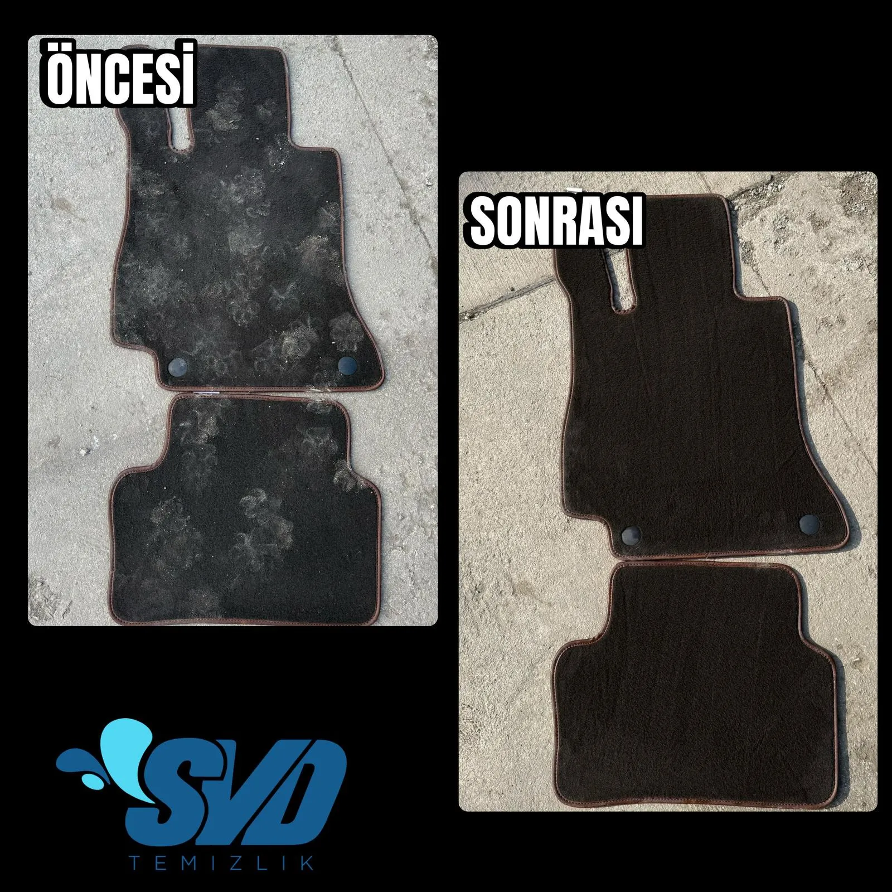

Aracınızın Gizli Kirlerine Elveda Deyin
Sadece koltuk kılıflarını silmek "temizlik" demek değildir. Direksiyon simidi üzerindeki matlaşmalar, vites çevresindeki kahve damlaları, kapı fitillerine dolmuş yağlı tozlar, bagaj halısına dökülmüş antifriz veya tavan döşemesine sinmiş yoğun sigara dumanı... Aracınızın piyasa değerini dahi düşüren bu etkenleri son teknoloji ürünlerle gideriyoruz.
SVD Temizlik olarak, kendi güvenli park alanınızda en az 3 saat süren mikroskobik ölçekte bir iç temizlik (detailing) gerçekleştiriyoruz. Bu sayede hem zaman kazanıyor hem de aracınızın işlemleri gözünüzün önünde yapılırken içiniz rahat oluyor.
İç Kuaför Adımlarımız
- Tavan Temizliği: Aracın en hassas bölgesi olan tavan döşemesi sarkma yapmasın diye susuz kuru köpük sistem ve özel mikrofiber tornador havlu ile zımparalama usulü olmadan temizlenir.
- Kapı Pandizot ve Fitilleri: Kapı iç döşemeleri (kumaş ise vakumlu deterjanla, deri ise buharlı PH nötr losyonla) ve kapı menteşe fitilleri detay fırçaları ile arındırılır.
- Taban Halısı ve Paspaslar: En çok kir tutan taban halısı (kumlar, çamur tortuları) matkap ucu yumuşak fırça ile fırçalandıktan sonra yüksek emişli sanayi makinesiyle dipteki kumlar dahil çekilir. Bagaj halısı da aynı işlemden geçer.
- Ön Konsol, Torpido ve Trimler: Klima ızgaralarının içi, ekran çerçeveleri ince ressam fırçaları ve APC (yok edici) kimyasallar ile silinir. Son olarak çatlamayı engelleyen antistatik (toz tutmayan) mat besleyici koruma uygulanır.
- Koltuk Yıkama: Kapsamlı araç koltuğu yıkama prosedürümüz adım adım uygulanarak kumaş/deri yüzey dezenfekte edilir.
Sıkça Sorulan Sorular
Asla. SVD Temizlik olarak tavan temizliğinde yüksek tazyikli su veya sulu fırça kullanmayız. Tornador özel hava tabancası ve kuru köpük solüsyonu ile tavana aşırı su işlemeden sigara isi temizlenir, risk sıfırdır.
Kullandığımız solüsyonların tamamı antialerjik, insan sağlığına zararsız kapalı ortam için tasarlanmış ph-dengeli ürünlerdir. Ağır sanayi kimyasalları değil, ferah bir şampuan kokusu kalır.